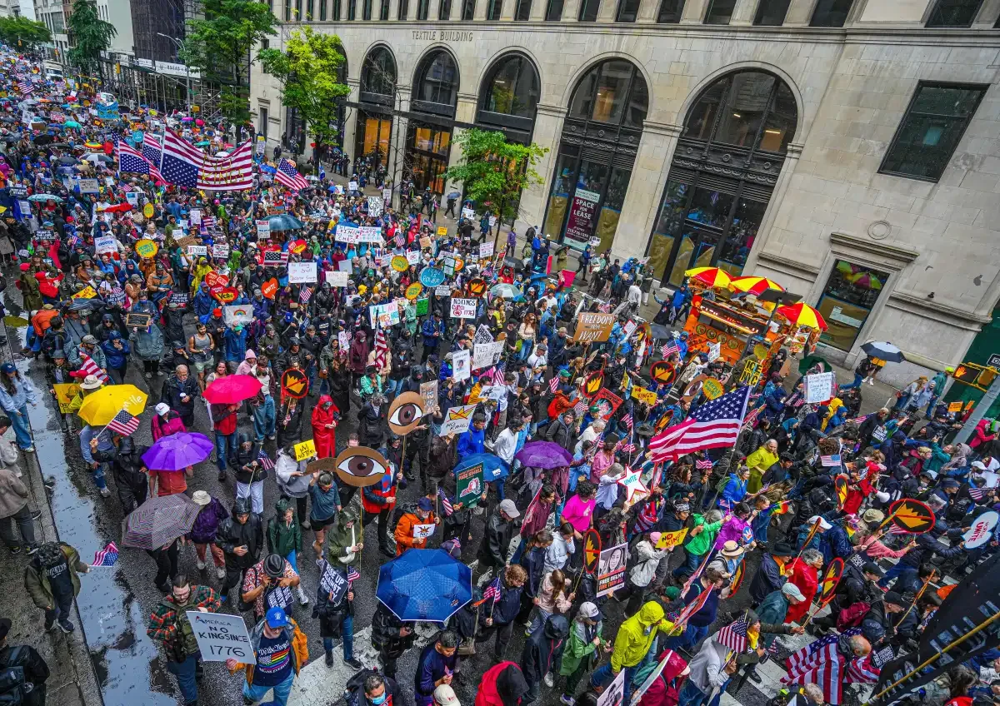

Protest Safety
When attending a protest, be sure to stay aware of your surroundings, know your rights, and bring all necessary items to ensure safety. Remember that situations may turn dangerous quickly.
Safety Tips
A History of NYC Protests
It's important to understand the history of protests in New York to feel connected to the city. Learning about past activism helps us understand why it's so important and mantain our drive for change.
Historical Protests in NYC
Joining a Movement
If you want to start attending protests and marches, it can sometimes be intimidating finding out where and when they occur. Social media is a great way to discover events in your community.
Get Involved